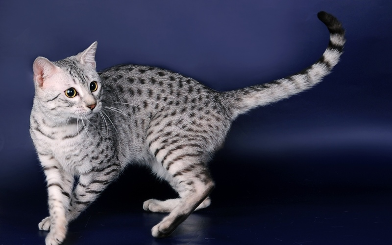

ДОМАШНЯЯ КОШКА
История
КОШКА ДОМАШНЯЯ (Felis catus), самый мелкий представитель хищных млекопитающих семейства кошачьих (Felidae) и одно из первых животных, одомашненных человеком. Судя по всему, вид происходит от дикой лесной кошки Старого Света (F. silvestris), которая очень похожа на домашнюю, но в среднем несколько крупнее, а точнее, от ее африканско-ближневосточного подвида F. silvestris libyca, или степной кошки, иногда выделяемой в особый вид (F. libyca). Считается, что на Ближнем Востоке дикие кошки начали жить с людьми 7000 лет назад, но настоящее их одомашнивание произошло только 4000 лет назад, по-видимому, в Египте и главным образом по религиозным причинам. В Древнем Египте кошки почитались, охранялись законом и в огромных количествах мумифицировались, но в большинстве случаев это вряд ли было выражением привязанности хозяев к домашним любимцам. Факт мумификации сотен тысяч в основном молодых животных скорее указывает на жертвоприношения. Большинство кошачьих мумий соответствует особям в возрасте от двух до четырех или от девяти до двенадцати месяцев, погибшим в результате перелома шеи.
С Ближнего Востока домашняя кошка постепенно распространялась в другие области: примерно к 500 до н.э. она достигла Греции, к 300 до н.э. – Индии, к 200 до н.э. – Китая, к 100 н.э. – Италии, к 200 н.э. – территории современной Швейцарии, к 400 н.э. – Британских островов. В Европе эти животные скрещивались с местным, лесным, подвидом дикой кошки – F. silvestris silvestris. Эта гибридизация достигла таких масштабов, что, как утверждают некоторые зоологи, чистокровных европейских диких кошек в природе больше не существует.
Характеристика
Породы кошек
|
|
|